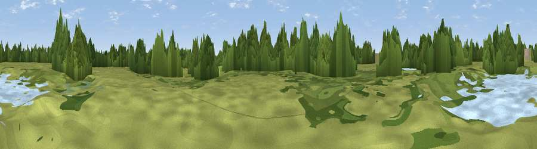

Viewpoint near Romford
#44592 in England · top 76% of its area beats it · near RomfordWhere it is
The exact computed spot (TQ 51123 85677). Click the marker for map links.
The view, rendered

A 360° render of this exact spot computed from the terrain model, tree cover and land cover — summer colours, afternoon light, calibrated against photographs of famous viewpoints. Real trees, hedges and buildings will differ in detail.
The panorama
Grey silhouette: terrain skyline in each direction (720 bearings, Earth curvature and refraction included). Dashed green: skyline with trees (+15 m) and buildings (+8 m) as obstacles. Blue strip: how far the ground is visible on each bearing.
Where the view opens
Wedge length = distance to the farthest visible ground on that bearing (vegetation-aware). Rings at 10, 25 and 50 km.
What fills the view
42% woodland · 39% grassland · 15% built-up · 3% water ·
Angular shares of the visible panorama (visual magnitude), not map area. Landscape diversity 0.51 (0–1 Shannon).
Key numbers
More beautiful places nearby
The staircase of upgrades: each row has a higher view potential than everything closer. Driving times are estimates from straight-line distance, calibrated against real road routing — check an actual route before setting out.
| Place | Direction | Drive | Score |
|---|---|---|---|
| Viewpoint near Wennington | SSE · 3 km | ~7 min | 39.7 |
| Viewpoint near Erith | S · 6 km | ~13 min | 54.3 |
| Viewpoint near Ebbsfleet Valley | SSE · 16 km | ~28 min | 56.1 |
| Viewpoint near Horndon On The Hill | E · 16 km | ~28 min | 58.8 |
| Viewpoint near Wrotham | SSE · 27 km | ~43 min | 65.1 |
| Viewpoint near Wrotham | SSE · 28 km | ~44 min | 66.6 |
| Viewpoint near Shipbourne | S · 33 km | ~51 min | 69.1 |
| Box Hill | SW · 46 km | ~66 min | 70.4 |
51.54975, 0.17820 · source: osm viewpoint · position refined by local search. Computed location — check access rights before visiting.